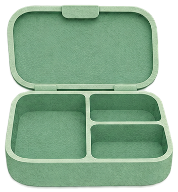
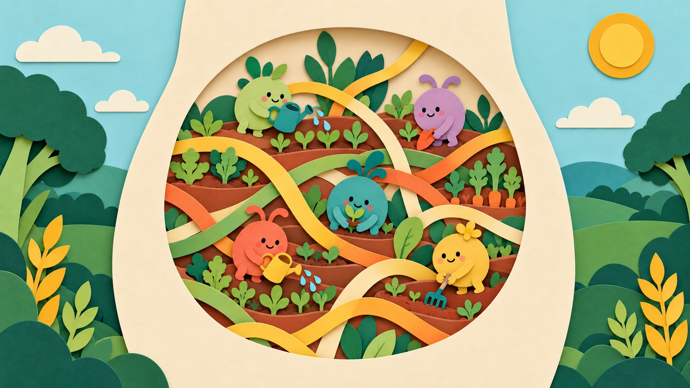
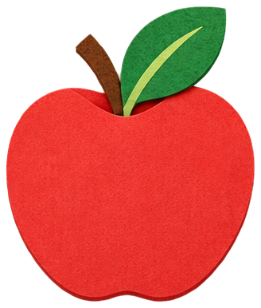
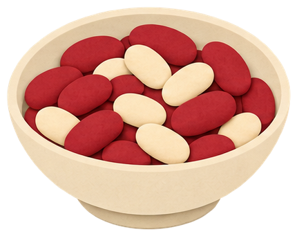
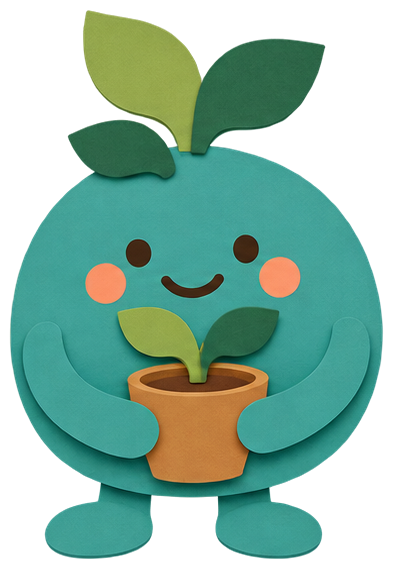
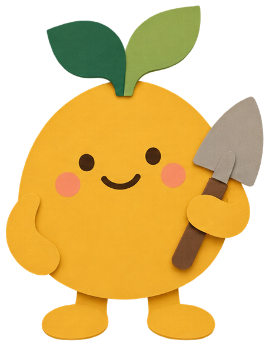

← Меню
?
Есть ли в еде клетчатка? Есть — в садик, нет — в корзинку.
Без клетчаткино тоже нужна: это белок


Садик в животесюда — еду с клетчаткой
Разложено 0 из 12
полка с едой
Что такое клетчатка?





Клетчатка — часть растений. Она как паровозик: помогает еде ехать по животу. А ещё ей питаются маленькие помощники — полезные микробы в животе.
Разложи еду: где клетчатка есть, а где нет. Не уверен — нажми «Лупа» и потом на еду.